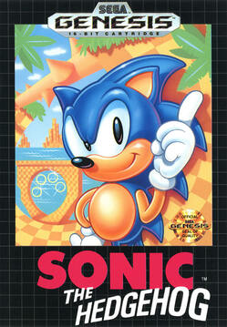

1991: O Nascimento no Mega Drive
Criado por Yuji Naka e Naoto Ohshima, o Sonic surgiu para ser a resposta da SEGA ao Mario. O design original de 16-bits apostava em um personagem redondo, com pernas curtas e uma paleta de cores inspirada no logotipo da SEGA. A física do jogo, baseada em ganho de momento e loopings, revolucionou o gênero de plataforma e definiu o lema da franquia: velocidade e atitude.